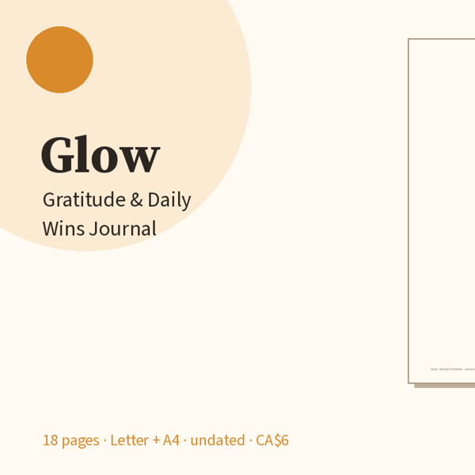

Free daily gratitude page
Notice the good. Count the wins.

One printable page: three gratitudes, a daily prompt, three wins, a mood check-in, and room for notes. Two minutes a day.
Download free PDF
What’s on the free page
Want the whole Glow system? Glow: Gratitude & Daily Wins Journal — CA$6: 18 pages — daily gratitude, wins log, weekly + monthly reflection, mood tracker, gratitude jar, 60 prompts, blank masters. Letter + A4. Get it on Gumroad →
- 3 gratitude lines + a rotating prompt
- Daily wins checklist + optional mood dots
- Undated — start any time of year
- Print on US Letter · Actual size or Fit to page
What’s in the full pack
- 5 daily gratitude pages (rotating prompts)
- 2 wins-log sheets (date · win · area · size)
- 2 weekly reflections with mood row
- Monthly mood & glow tracker
- Gratitude jar · people I'm grateful for
- Monthly glow review (keep/tweak/drop)
- 60 gratitude prompts + blank masters
- US Letter and A4 PDFs · personal household use
Print tips
Regular paper is fine. Keep a week of pages on a clipboard by the bed or coffee maker. Photograph a filled page if you want a digital backup without another app.